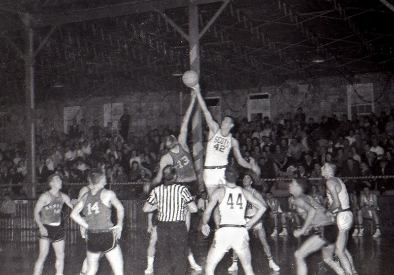

History of College Basketball
After the invention of basketball in 1891 colleges picked up the game from YMCA networks. The first recorded college game ever played was between hamline state university and the minnesota state school of agriculture. Minnesota won the game with a score of 9 to 3.

The 5 player rule was standardized and made mandatory in 1897 by the amateur sports federation. The university of chicago and the university of iowa were the first teams to play using the 5 player rule on january 18 1896, before this they played with 9 players per side.
The NCAA Tournament
The NCAA division mens basketball tournament widely known as march madness or the big dance began in 1939 with an initial field of just 8 teams. It was proposed by Ohio state coach Harold Olsen and organized by the national association ofbasketball coaches, the first ever champion was Oregon, which defeated Ohio state 46-33 in Evanston, Illinois. In 1951 it expanded to 16 teams as conference champions were introduced. In 1975 it expanded to 32 teams. n 1978 team seeding was introduced which means they were put into brackets based on how good their team was. In 1985 it expanded to a 64-team bracket, eliminating byes and requiring a champion to win 6 games. 2001-2011- Play-in games were added, growing the field to 65 teams in 2001 and 68-team "first four" format by 2011. It is expected to expand to a 76 team format by 2027.
History of Womens Basketball (WNBA)
Womens basketball began just a year after the game was invented. In
1892 physical education instructor Senda berenson adapted the sport
for women at smith college to preserve traditional victorian ideals of
femininity. Early women's games featured courts divided into two or
three sections with veyr limited rules, no stealing and limited
dribbling. Players initially wore long dresses, corsets and later
bloomers. Full court 5 on 5 basketball for women was adopted in 1971.
Womens basketball became an official olympic sport at the 1976
montreal games.
The Womens Professional Basketball league (WBL) was the first attempt
at a US womens pro league, lasting three seasons before folding. The
US national womens team (Dream Team) dominated the 1996 Atlanta
olympics, creating the commercial and cultural momentum needed to
launch a permanent professional league. On april 24, 1996 the NBA
board of govenors officially approved the creation of the WNBA.
The league began eight original teams
- Cleaveland rockers
- Houston comets
- Los angeles sparks
- New york liberty
- Phoenix mercury
- Sacrament monarchs
- Utah starzz
- Charlotte sting
The Comets Dynasty
led by Cynthia cooper, Sheryl swoopes and Tina thompson the Houston comets won the leagues first four consecutive championships with Cynthia cooper winning the first 2 consecutive MVPs
2000s and Independence
Ownership transitioned away from direct NBA control in 2002, welcoming
independent ownership groups and new expansion franchises like the
Seattle storm and Connecticut sun. Lisa leslie became the first player
to dunk in a WNBA game in 2002.
The Minnesota lynx led by Maya moore and the Seattle storm led by sue
bird and Brenna stewart built multi-tittle dynasties.
In 2026 the WNBA collective bargaining agreement expands the salary
cap to 7 million, up from roughly 1.5 million with supermax salaries
reaching 1.4 million.
Integration of black people into basketball
The integration of black people into basketball unfolded over decades through community-driven leagues, pioneering collegiate breakthroughs and the slow, hard fought desegregation of the NBA. Basketball was introduced to african americans on an organized basis in 1904 by Edwin Bancroft Henderson in washington, DC. Because gymnasiums and athletic clubs were strictly white-only, black athletes formed independent teams known as black fives or colored quints. Sponsored by churches, YMCAs, black people owned newspapers and social clubs, these games often merged sports with jazz, ragtime and dancing. Iconic black teams like the New york renaissance(the rens) and th Washington bears dominated competion, even winning pre-NBA world championships against all white teams.
College Basketball Integration
In 1947, William garrett broke the "gentlemen's agreement" that had barred black players from the big ten conference by joining Indiana university. Despite facing severe taunts and segregation on and off the court, Garett became an all-American, paving the way for rapid integration across major collegiate programs.
Integration into the NBA
The NBA operated under an official color ban until 1950, when three trailblazers shattered the league's barrier:
- Chuck cooper
- Drafted on April 25, 1950, by the boston celtics cooper became the first black player ever selected in the NBA draft
- Nat clifton
- On May 24, 1950, Clifton signed an NBA contract with the New york knicks, becoming the first black player to sign an official league contract.
- Earl lloyd
- On October 31, 1950, Lloyd stepped onto the court for the washington capitals, becoming the first african american to actually play in a regular-season NBA game.